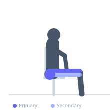
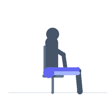

Exercise guide / Single-Leg Leg Press
Single-Leg Leg Press
The single-leg leg press uses one foot on the platform of a standard leg press machine, training one leg at a time to identify and correct strength imbalances between limbs. By using half the foot surface area, the single-leg press also increases the demand on balance and hip stability compared to the bilateral version. It is an effective tool for rehabilitation and for addressing limb asymmetries in athletes.
Primary muscles
rectus femoris
vastus lateralis
vastus medialis
gluteus maximus
Secondary muscles
biceps femoris long head
Stabilizers
gluteus medius
tensor fasciae latae
Equipment
Leg Press Machine


Starting position
- Sit in the leg press machine. Place one foot in the center of the platform. Keep the other foot resting on the frame or beside the platform but completely unloaded.
Setup
- Use significantly less weight than your bilateral leg press. Load the machine appropriately — expect to use 50-60% of your bilateral load.
Steps
- Step 1: Brace the core and ensure the working foot is centered on the platform.
- Step 2: Release the safety and bend the knee to lower the platform toward you.
- Step 3: Descend until the thigh reaches approximately 90 degrees of knee flexion.
- Step 4: Press through the entire working foot to extend the leg and return to the starting position.
Coaching cues
- Foot centered
- Knee tracks over second toe
- Drive through the entire foot
Breathing
- Inhale on descent, exhale on the press.
Range of motion
- Knee to approximately 90 degrees without the lower back rounding off the pad.
Tempo
- 3-0-1-0
Common mistakes
- Using more weight than appropriate and compensating with hip or back
- Knee caving inward during the press
- Locking out the knee forcefully at the top
Safety
- Do not fully lock out the knee — stop just short of full extension
- Ensure the safety handles are within reach
Training
- strength: 6–10 reps
- hypertrophy: 10–20 reps
- strength: 3–4 sets
- hypertrophy: 3–4 sets
- Rest: {'strength': 90, 'hypertrophy': 75}